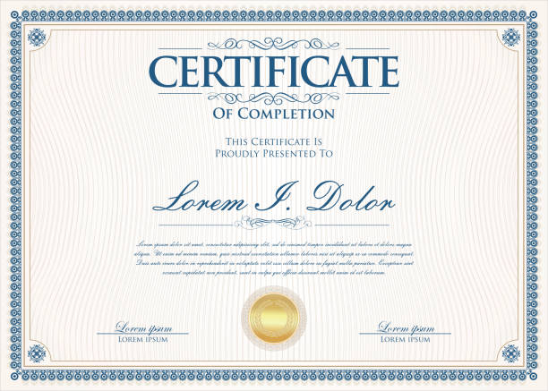
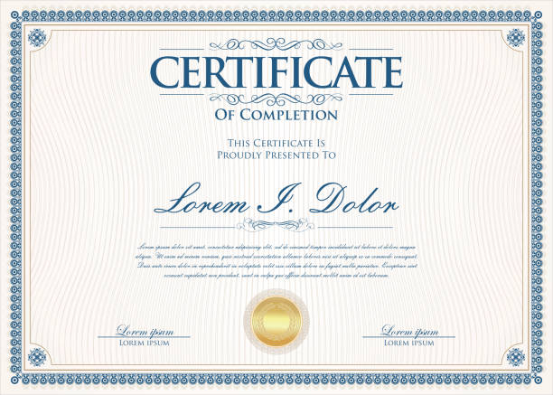

Baccalauréat Mathématiques
Obtenu en 2021 au Lycée Tayeb Mhiri Sfax. Une étape clé marquant le début de mon parcours académique en sciences.
Obtenu en 2021 au Lycée Tayeb Mhiri Sfax. Une étape clé marquant le début de mon parcours académique en sciences.
Obtenue en 2024, après 1 an à l'ISET Kébili et 2 ans à l'ISET Sfax. Formation approfondie en développement logiciel et systèmes.

Actuellement en formation à l'IIT pour obtenir mon diplôme d'ingénieur en génie informatique. Un parcours axé sur les technologies avancées.